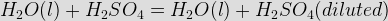

- The capacity of a cell is measured in
The capacity of the cell is measured by the discharging at a constant electric current until it fully drains out for that particular time. Hence, the capacity of the cell/battery is measured by the Ampere-hour rating.
- The storage battery generally used in electric power station is
Deep-cycle lead–acid (DCLA) battery provide a steady electric current over a long time period and these are all connected together to form a battery bank. The technology of lead–acid battery is uncomplicated and manufacturing costs are low compared to other type of battery . So, it is cost effective and it has good discharging characteristics.
- Cells are connected in series in order to
When connecting the cells in serious, according to the Kirchhoff’s law the voltage across the cells can be increased and in the same time, the electric current capacity of the cells can be the same capacity of the single cell.
- Common impurity in battery electrolyte is
The iron content in the electrolyte leads to make a conductive path to positive plate to negative plate. That is nothing but the short circuit occurs in between the positive and negative plate. Hence, we used to consider the iron as the common impurity in the electrolyte.
- The indication of the state of charge of a battery is best given by
During the charging and discharging time, the value of specific gravity of electrolyte varies. For example, during the charging time, the value of specific gravity increases from the electric current level and during the discharging time, the value of specific gravity decreases from the electric current level. But, the rest of all factors which shown in above are not changed. Hence, the state of charge of a battery is given by the specific gravity of electrolytic.
- One ampere hour charge is equivalent to

This is the reason that the one ampere-hour charge is equivalent to 3600 Coulombs. - The internal resistance of a dry cell is of the order of
In dry-cell battery , the electrolyte is in the form of a paste. And there is no presence of nickel and iron material. Due to that, the internal resistance of the dry cell is very less. The value is approximately in between 0.2 to 0.4 Ω.
- When water is added to sulphuric acid
Due to the exothermic reaction, the heat is generated when the sulphuric acid is added with water. The expression is as follows,

The amount of heat (q) in Joules can be calculated as follows:
q = specific heat of water × grams of water × change in temperature
Specific heat of water = 4.18 J / (g°C)
Grams of water = 50
Change in temperature = final temperature - initial temperature - A constant voltage source has
- Which battery is used in aeroplanes?
In aero planes, mostly we are using the nickel - cadmium battery. So, none of them is correct answer.
- The electric current in a chemical cell is a movement of
We know that the Ions with a positive charge are called positive ions and ions with a negative charge are called negatives. These two ions move from an area of high energy toward an area of low energy that produces a flow of electrons (current). Basically, this movement of ions is called as electrolytic conduction.
- Cells are connected in parallel to
As we know that if battery are connected in parallel then the voltage across the terminal is constant. But, all battery deliver their own electric current capacity in that single terminal. Hence, finally the electric current capacity of the whole system increases.
- The greater of internal resistance of a cell
- A external resistance R is connected to a cell of internal resistance r, then the electric current is maximum when
The external resistance (R) is connected with the internal resistance (r) of the cell in series connection. So, the total resistance is ( R + r ). When the total resistance is low, then there is a maximum electric current flow in that circuit. If we apply the option (A) and (B), then the overall resistance increases than the option (C). Hence, if the external resistance (R) and the internal resistance (r) are equal, then the maximum electric current flows through the circuit.
- When the internal resistance of a cell is large compared to the external resistance in the circuit then high electric current can flow through the external resistance by grouping the cells
As per the above statement, the internal resistance of the cell is larger than the external resistance. So, if we connect the cells in parallel, then the overall internal resistance decreases. We know that, in low resistance path the electric current flow is more. Hence, we need to group the cells in parallel to make the electric current flow as high.
- The electric current flow through electrolyte is due to the movement of
The ions move from an area of high energy toward an area of low energy in the electrolyte that produces a flow of electrons (current). Basically, this movement of ions is called as electrolytic conduction.
- When the battery is being charged, the terminal voltage decreases with
Whenever a battery is being charged, the terminal voltage of the battery changes a small amount whenever the battery temperature changes. As the battery temperature increases, its terminal voltage decreases or as the terminal voltage decreases, its temperature increases. This is usually called as temperature compensation in a storage battery.
- Two battery having unequal emf
We can’t connect the two battery in parallel, when they have unequal voltage. If we connect it in parallel, then the low voltage battery is being charged by the high voltage battery . So, there is a chance of causing the damage in that circuit. But, if we connect it in parallel, then the both voltage added together and we get that added voltage at output side. Hence, two battery having unequal voltage can be connected in series only.
- Battery charging equipment is generally installed
The ventilation is required to maintain the temperature level in battery . The clean and dry place maintains the battery from the short circuit by wet condition. The charging source as possible as be near with the battery. Otherwise, more power loss happens in the electrical wire. Hence, we need the above all features to install the battery charging equipment.
- Cell short circuit results in
Due to the short circuit, sudden discharge happens. This is directly proportional to specific gravity. So, it decreases. Due to high electric current flow and sudden voltage drop, the temperature increases. The formation of hydrogen and oxygen in the electrolyte reduces. Hence, all of the above happens when the cell gets short circuit.
Design with  by SARU TECH
by SARU TECH
www.sarutech.com
Content Credited to electrical4u.com
Online Electrical Engineering Study Site